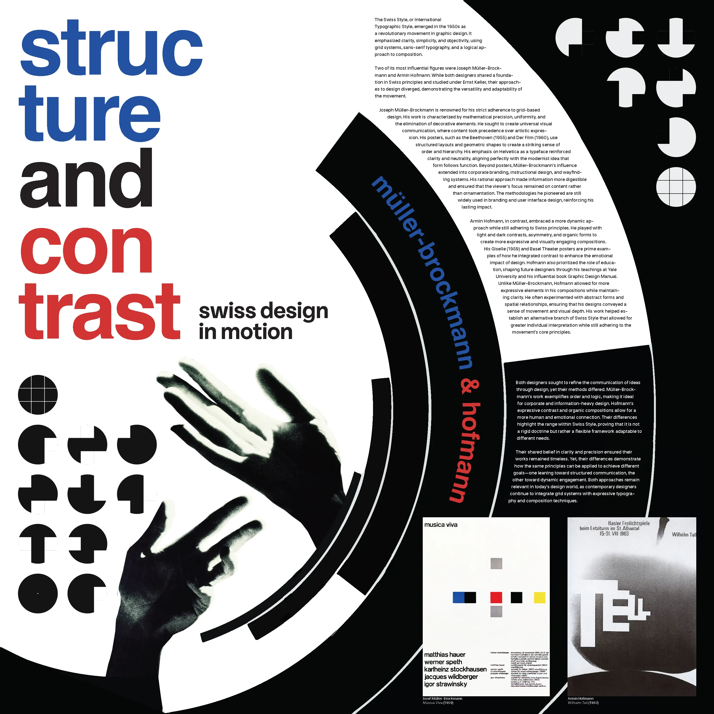

Print Design
Print Design
Project Brief
For this project, the brief was to create an educational poster on two Communication Design figures. I chose Josef Müller-Brockmann and Armin Hofmann specifically because their work sits at opposite ends of the same Swiss design tradition, with Müller-Brockmann’s rigid grid systems against Hofmann’s looser, more expressive compositions, which gave me a real design tension to structure the poster around instead of just presenting two unrelated bios side by side.
I built that tension directly into the layout: the poster is divided into four quadrants: type-only, image-only, type-dominant, and image-dominant, so each section isolates one variable in the structure-versus-expression argument. Read together, the four quadrants move the eye across the same spectrum Müller-Brockmann and Hofmann occupied in their own work, so the grid itself becomes part of the content rather than just holding it.
Final Design
